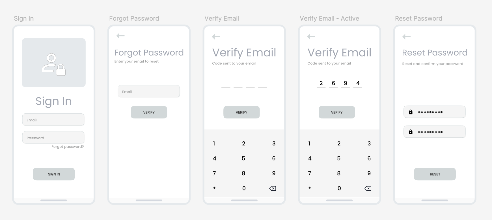

Address Reporting Tool - web application using Google GeoLocation API,
displays Google Maps and Google Sreet View dynamically as the user inputs the address desired
along with data from SQL database
User Flow for Sign In
Sign-in user flow wireframe (forgot password use case)
Sign-in low fidelity mock-ups (forgot password use case)

UX Analytics - Heatmaps
A visual representation of data that uses colors to show how users interact with
a website.
UX Analytics - A/B Testing
A user experience research method that compares two or more
versions of a page or content to determine which one performs better
ABOUT
Welcome to my portfolio!
I’m Calin, a UX/UI and Product Designer with over ten years of experience across finance, telecommunications,
and insurance.
My background in both visual design and front-end development allows me to bridge the gap between
design and implementation, ensuring projects are both visually compelling and technically sound. In my recent roles
I developed and maintained design systems, crafted wireframes, prototypes, and interactive mock-ups, and conducted user
research to refine the user experience. I collaborate closely with cross-functional teams, using tools like Figma,
Adobe XD to create engaging, user-centered designs that align with business objectives and enhance usability.
My resume in PDF format:
My UX Design Process *
(* Disclaimer: in a real world example the style guide and/or design system could be in place already, etc. )
1. User Research
Objective: Gather insights on the users, their needs, and behaviors.
Activities: Conduct interviews, surveys, and observations to understand the target audience. Analyze data to identify trends or pain points.
Outcome: Gather data that will inform user personas.
2. Define User Personas
Objective: Create fictional but data-driven representations of target users.
Activities: Use insights from research to outline user demographics, goals, motivations, frustrations, and key characteristics.
Outcome: A set of personas that represent the primary user segments.
3. User Journey Mapping
Objective: Visualize the process a persona goes through to achieve a goal with the product.
Activities: Map out each stage of interaction to understand pain points, needs, and opportunities.
Outcome: User journey maps that help identify areas where the design can have the most impact.
4. Wireframing
Objective: Create a basic visual representation of the product layout.
Activities: Design low-fidelity wireframes, focusing on layout and content structure without color or detailed visuals.
Outcome: Wireframes that outline the flow and layout of each screen.
5. Design Low-Fidelity Prototype
Objective: Make an interactive version of the wireframe to test basic functionality.
Activities: Use tools like Figma or Adobe XD to connect wireframe screens in a clickable prototype.
Outcome: A low-fidelity prototype that allows basic user flow testing.
6. User Testing (Low-Fidelity)
Objective: Validate the wireframe/prototype’s effectiveness.
Activities: Conduct usability testing sessions to observe users interacting with the low-fidelity prototype.
Outcome: Insights that inform refinements before moving to high-fidelity designs.
7. Create UI Design and Style Guide
Objective: Develop the visual design components and guidelines.
Activities: Define the visual style (colors, typography, iconography) and create a style guide.
Outcome: A style guide that ensures consistency in the visual design.
8. Design High-Fidelity Mockups
Objective: Design a fully detailed visual representation of the product screens.
Activities: Create high-fidelity mockups, incorporating the style guide elements.
Outcome: Detailed mockups of each screen that represent the final visual design.
9. Build High-Fidelity Prototype
Objective: Make an interactive, high-fidelity version of the product.
Activities: Use design tools to link high-fidelity screens into a fully interactive prototype.
Outcome: A high-fidelity prototype that closely resembles the final product.
10. User Testing (High-Fidelity)
Objective: Validate the high-fidelity design.
Activities: Conduct usability testing to gather feedback on the high-fidelity prototype.
Outcome: A validated design ready for developer handoff.
11. Developer Handoff
Objective: Share design specs and assets with developers.
Activities: Provide developers with access to the final designs, style guides, and any necessary documentation.
Outcome: Smooth transition for developers to start building the product according to the design specifications.